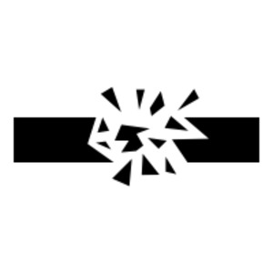

ϫⲟⲩⲗ B nn m, fragment or sim (cf ܓܠܐ IgR): MG 25 194 ϫ. in serpent's eye, ⲁϥϩⲉⲓ ⲛϫⲉ ⲡⲓϫ. ϧⲉⲛⲡⲉϥⲃⲁⲗ at saint's touch.

ϫⲟⲩⲗ B nn m, fragment or sim (cf ܓܠܐ IgR): MG 25 194 ϫ. in serpent's eye, ⲁϥϩⲉⲓ ⲛϫⲉ ⲡⲓϫ. ϧⲉⲛⲡⲉϥⲃⲁⲗ at saint's touch.
| view | ⲗⲁⲕⲙ, ⲗⲁⲕⲙⲉ S ⲗⲉⲕⲙⲏ Sf ⲗⲉⲕⲙⲉ AL ⲗⲁⲕⲙⲏ, ⲗⲁⲭⲙⲏ B ⲗⲉⲕⲙⲓ, ⲗⲉⲭⲙⲓ F | (noun feminine) once m, piece, fragment [κλασμα, ξωμος]951 |
| view | ⲗⲁⲕϩ SB ⲗⲉⲕϩ SfF | (noun masculine) (f once)
corner, extremity, top [ακρος, αγκωνισκος, γωνια, κρασπεδον] piece, fragment [κλασμα, ξωμος] builder's square962 |
| view | ⲗⲉⲯⲉ, ⲗⲉⲡⲥⲉ, ⲗⲓⲯⲉ S ⲗⲁⲡⲥⲓ B | (noun masculine) fragment, small portion997 |
| view | ⲕⲟⲟϩ SA ⲕⲱϩ S ⲕⲟϩ AB ⲕⲁϩ Sf ⲭⲟϩ B | (noun masculine/feminine) angle, corner [γωνια]
point, top [ακρον] fragment, piece904 |